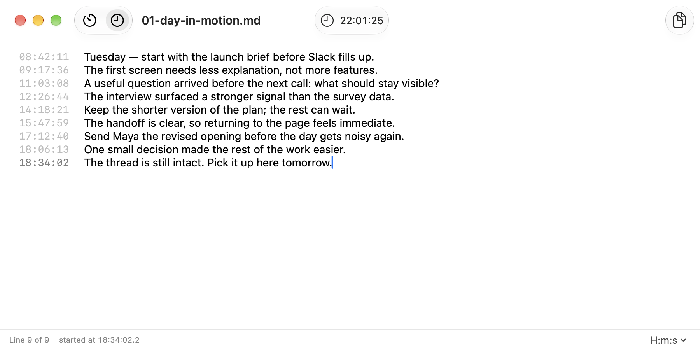
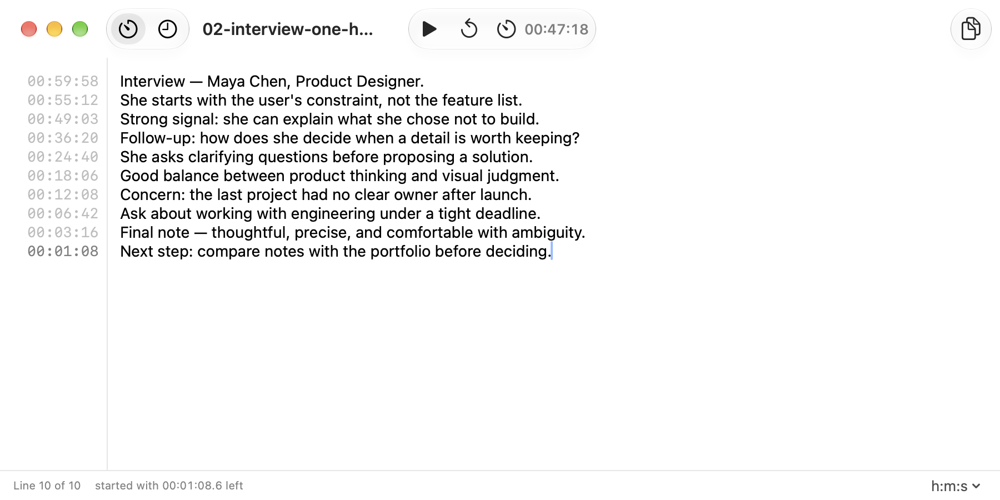
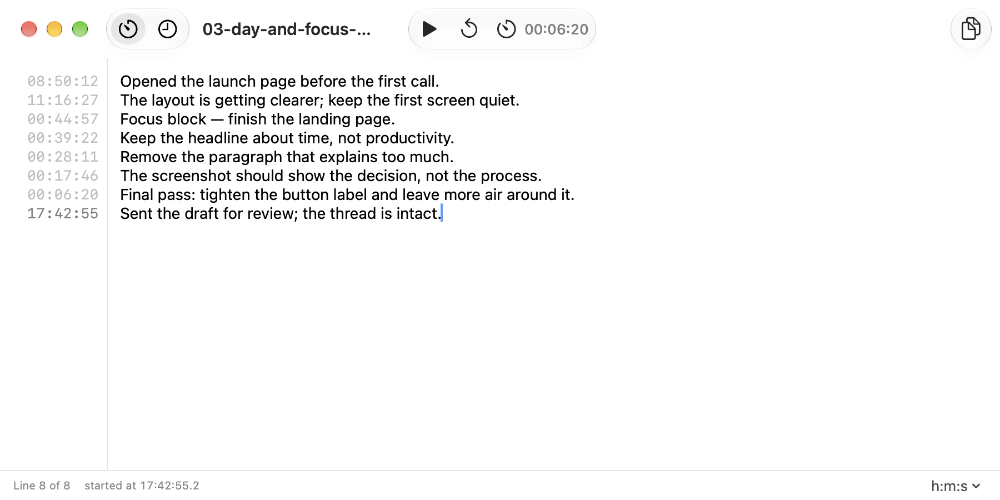

01 / Throughout the day
Keep the day in one thread.
Capture the thought before Slack, a call, or the next task changes the context.
A focused journal for Mac and web
Write as you work. Each line gets a timestamp.

A quiet place to stay with one task. Use the clock when context matters, or a timer when the slot is fixed. Your note stays on this device.
Capture the thought before Slack, a call, or the next task changes the context.

Set a slot, listen, and write. Each line keeps the time left when you made the note.

Start a block, keep typing, and return to the exact state of the work — not a vague feeling.
Aikarivi keeps the workspace calm and the task in view. No feed, prompts, or organising ritual — just a blank page that quietly remembers when each line happened.
Open the zen workspace ↗The web workspace runs on GitHub Pages and keeps its notes in this browser. No account or syncing backend.
Keep the page quiet. Use the clock for the day or a countdown for a focused block.
Export ordinary Markdown whenever you like, then open the same note in Aikarivi for Mac.
Keep your attention on the task in front of you. Start locally in the browser, or use the native Mac app with the same Markdown notes.